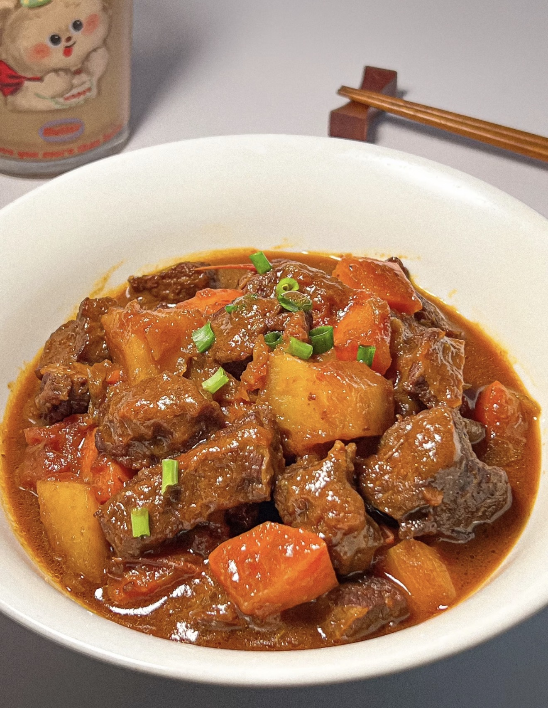

Tomato Potato Beef Stew
番茄土豆炖牛腩 — A rich and comforting stew with tender beef, tomatoes, and potatoes.
Ingredients
- Beef brisket (cut into chunks)
- Tomatoes (cut into pieces)
- Potatoes (cubed)
- Carrot (optional)
- Onion
- Ginger slices
- Star anise
- Bay leaves
- Cinnamon stick
- Cooking wine
- Soy sauce
- Dark soy sauce
- Oyster sauce
- Rock sugar
- Salt
Directions
- Blanch beef in cold water with ginger and cooking wine. Rinse clean.
- Heat oil in a pot and melt rock sugar until caramelized.
- Add beef and stir to coat evenly with caramel.
- Add onion and stir until fragrant.
- Add tomatoes and cook until softened and juicy.
- Season with soy sauce, dark soy sauce, and oyster sauce.
- Add boiling water to cover the beef.
- Add star anise, bay leaves, and cinnamon stick.
- Simmer on low heat for 30 minutes.
- Add potatoes and carrot, continue cooking for 20 minutes.
- Adjust seasoning and reduce sauce if needed.
- Serve hot with rice.